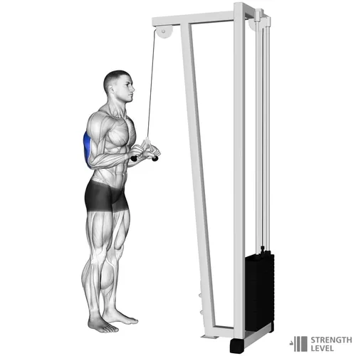

Tricipiti Corda Cavo Alto

Consigli utili
- Mantieni la tecnica corretta durante l'intero movimento
- Controlla l'esecuzione sia in fase concentrica che eccentrica
- Utilizza un carico che permetta la corretta esecuzione
Errori comuni da evitare
- Movimenti troppo veloci o a scatto
- Postura scorretta
- Range di movimento incompleto
Torna alla Home